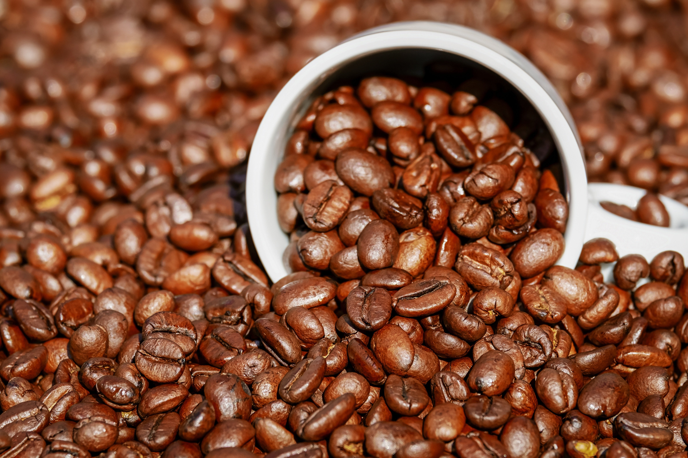
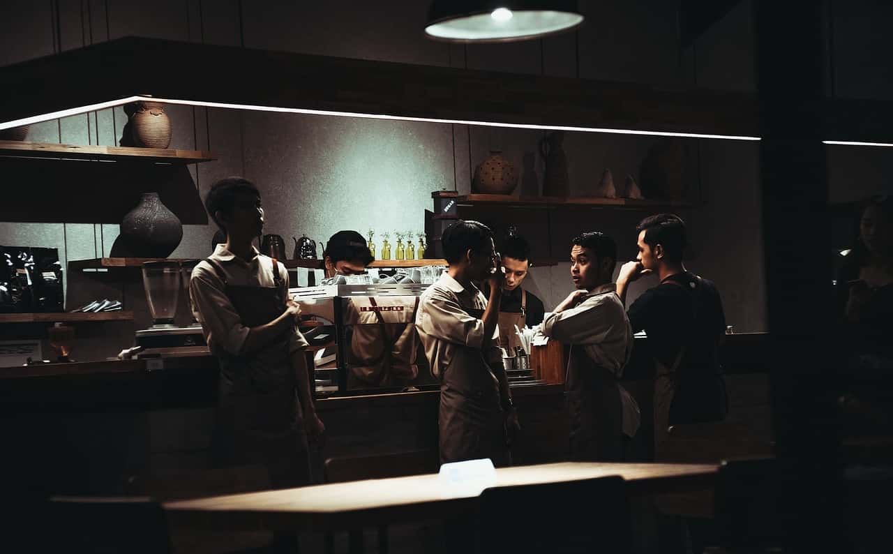

Recruit
NATURAL KITCHEN 私たちのカフェで、一緒に働きませんか？
当店は、オーガニック食材にこだわり、体にやさしく美味しいフードやドリンクを提供するカフェです。ナチュラルな空間の中で、お客様にくつろぎの時間をお届けしながら、心地よいサービスを大切にしています。今回、より多くのお客様に素敵な時間を過ごしていただけるよう、新しいスタッフを募集することになりました。

主なお仕事は、お客様への接客やオーダー対応、レジ業務、ドリンクやフードの提供、簡単な調理などです。未経験の方でも、カフェやオーガニックフードに興味があり、笑顔でお客様と接することができる方であれば大歓迎です。経験者の方は、これまでのスキルを活かして活躍できる環境をご用意しています。勤務時間はシフト制で、ライフスタイルに合わせた働き方が可能です。カフェが好きな方、人と接するのが好きな方、チームワークを大切にしながら働きたい方にぴったりのお仕事です。


温かみのある雰囲気の中で、お客様に心地よい時間を提供しながら、自分自身も成長できる環境で一緒に働きませんか？ご興味のある方は、ぜひお気軽にご応募ください。皆さまにお会いできるのを楽しみにしています。
| 店名 | NATURAL KITCHEN |
|---|---|
| 設立 | 2015年8月 |
| 代表取締役 | Napoleon Dynamite |
| 所在地 | 〒150-0021 東京都渋谷区恵比寿西1-2-3 |
| アクセス | 東急東横線「代官山」駅、1番出口より南へ徒歩6分 |
| 電話/FAX | 03-0000-0000/03-0000-0000 |
| メール | info@example.com |
| 従業員 | 25名 |